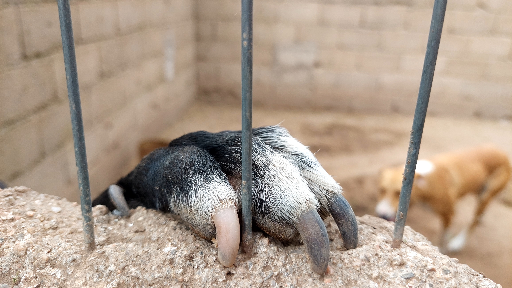
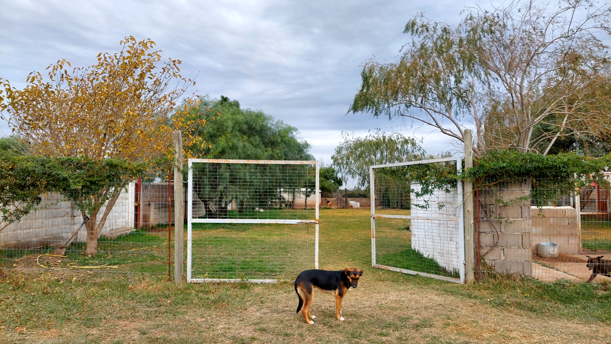

¿Que sabemos de nuestros peludos?
Los animales de compañía son seres sensibles que experimentan emociones y pueden desarrollar vínculos afectivos. Conoce los estudios que demuestran que los perros son seres sintientes.
Ver más
Marco Legal
Conoce las leyes que rigen en nuestro pais sobre protección animal, y como se desarrollan en otras partes del mundo
Ver más
refugios de la ciudad
Conoce las dos organizaciones sin fines de lucro que ayudan a nuestros peludos
Ver más